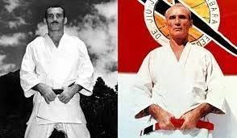

Origem do Jiu-Jitsu
O Jiu-Jitsu teve origem no Japão , sendo desenvolvido pelos samurais como uma forma de combate corpo a corpo quando estavam sem armas. As técnicas focavam em alavancas, quedas, imobilizações e estrangulamentos, permitindo que guerreiros menores derrotassem adversários mais fortes usando estratégia e técnica. No início do século XX, o mestre japonês Mitsuyo Maeda viajou para vários países divulgando a arte marcial. Em 1914, ele chegou ao Brasil e ensinou suas técnicas para Carlos Gracie , que posteriormente compartilhou o conhecimento com seus irmãos.
A família Família Gracie adaptou o estilo japonês, dando maior foco ao combate no chão, às finalizações e à eficiência técnica. Assim nasceu o Brazilian Jiu-Jitsu (BJJ), uma versão mais estratégica e voltada para defesa pessoal e competições. Com o passar dos anos, o Jiu-Jitsu brasileiro ganhou reconhecimento mundial, principalmente após sua eficácia ser demonstrada em torneios de vale-tudo e MMA. Hoje, o BJJ é praticado em academias do mundo inteiro e se tornou uma das artes marciais mais respeitadas da atualidade.

O Jiu-Jitsu no Brasil
Japão
O mestre Mitsuyo Maeda trouxe o Jiu-Jitsu ao Brasil no início do século XX, ensinando técnicas para a família Gracie.
Família Gracie
A família Gracie adaptou e desenvolveu o estilo brasileiro, focando principalmente no combate de solo.
Reconhecimento Mundial
Hoje o Brazilian Jiu-Jitsu (BJJ) é praticado no mundo inteiro, sendo referência em defesa pessoal e competições.